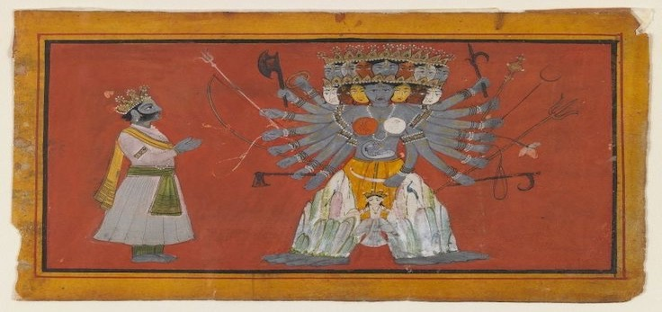

तस्मात् शास्त्रं प्रमाणम् - ०१
01 May, 2026

Pahari Artform (opaque watercolor & gold on paper), Vishvarupa - The Cosmic Form of Vishnu
(ca. 1820)
Précis. The title of this series of blogs "Tasmāt Śāstraṃ Pramāṇam" is inspired from the concluding injunction from Bhagavad Gītā 16.24, and is considered to be one of the most cited epistemological anchors in all of Indic philosophy. This particular blog from the series attempts to answer the inquisitive - What can be treated as a sufficient condition for the presence of humanly wisdom? - using the treasure trove of scriptures from Bhāratiya Civilization. A humble disclaimer, everything mentioned here are my own understandings and a sole result of me trying to direct the joy of knowing the scriptures. May the blessings of my āchāryas make me worthy enough to inspire a few around me.
The following verse serves as a beautiful metaphor to describe the equanimity of a great man. Without loss of generality, in this context, the term 'great man' is interchangeable with the term 'human of wisdom'. The verse is popularly attributed to the Hitopadeśa of the Pañcatantra authored by Vishnu Sharma.
सम्पत्तौ च विपत्तौ च महतामेकरूपता ।
उदये सविता रक्तो रक्तश्चास्तमये तथा ।।
The verse loosely translates to state that, the great remain unchanged. Neither good fortune nor misfortune affects a man of wisdom, just as, the sun is red at dawn and equally red at dusk. It appears the same as it rises or as it sets.
Now let us consider the ancient subhāśitam - Bhārataṃ Pañcamo Vedaḥ, Jāmātā Daśamo Grahaḥ - which is profound in its own right. As per vedic astrology (Horā Śāstra), the nine planets are troublesome enough and there is no tenth planet. But if at all a situation comes, then an incoming son-in-law shall be considered as the tenth planet, as despite these, he will bring problems of his own. Similarly, there is no fifth veda but if at all a situation comes, then Mahābhārata, due its importance, shall be considered as the fifth veda.
Now once again within the Mahābhārata itself there are five jewels, namely :
1. Sanatsujātīyam
2. Vidura Nīti
3. Yakṣapraśnam
4. Bhagavadgītā
5. Viṣṇu Sahasranāmam
Note that, all the above mentioned five jewels are, in form, conversations. The odd one in the list being Yakṣapraśnam, which is the only conversation named after and hence is know for, the questions and not the answers. Despite the fact that the answers involved reflected poise, eloquence and wisdom, it is the questions (arguably 125 questions) which empowers Yakṣapraśnam.
The following is on one of those questions credited to Part 03 (Āraṇyaka Parva) - Chapter 297, of the Mahābhārata.
03.297.62
यक्ष उवाच
व्याख्याता मे त्वया प्रश्ना याथातथ्यं परंतप ।
पुरुषं त्विदानीमाख्याहि यश्च सर्वधनी नरः ।।
The yaksha said "O scorcher of enemies! You have answered all my questions correctly. Tell me. Who is a man? Which man possesses all riches?"
03.297.63
युधिष्ठिर उवाच
दिवं स्पृशति भूमिं च शब्दः पुण्यस्य कर्मणः।
यावत स शब्दो भवति तावत्पुरुष उच्यते।।
Yudhishthira replied, "The reputation of good deeds touches heaven and earth. As long as that reputation remains, one is said to be a man.
03.297.64
तुल्ये प्रियाप्रिये यस्य सुखदुःखे तथैव च।
अतीतानागते चोभे स वै सर्वधनी नरः।।
One to whom the pleasant and the unpleasant, happiness and unhappiness and the past and the future are equal, is a man who possesses all riches."
Under a reasonable constraint, that wisdom is revered equivalent to all known and imaginable riches, the above states a litmus test to identify a person of wisdom. These two instances from the scriptures simultaneously validate each other. As the title suggests, therefore, let scripture be your authority.